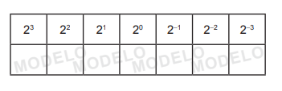
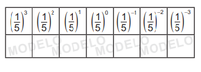

CAPÍTULO 2 - Potenciação e propriedades
Expoente inteiro
Vamos relembrar a potenciação e ampliar nosso estudo para o caso em que o expoente é um número inteiro.
- Troque ideias com um colega e, em seus cadernos, calculem as seguintes potências:

- (-6)²
(0,4)³
- (-8)¹
- (-3)³
- (12)²
Nas potências que vocês resolveram, os expoentes eram números inteiros positivos. E quando o expoente for um número inteiro negativo? Como resolvemos?
Para entendermos o significado do expoente inteiro negativo em uma potência, vamos recorrer a uma das propriedades da potenciação estudada no 7.º ano, a divisão de potências de mesma base. Observe:
- (I)
Agora, resolvendo essa divisão, aplicando a propriedade de divisão de potências de mesma base, temos:
- (II)
20
Comparando (I) e (II), podemos concluir que:
Vejamos outra divisão:
(I)
Resolvendo-a, aplicando a propriedade de divisão de potências de mesma base, temos:
(II)
Comparando (I) e (II) podemos concluir que:
Exemplos:
Propriedades da potenciação
Vamos relembrar as propriedades da potenciação estudadas no 7.º ano e conhecer uma nova propriedade.
Multiplicação de potências de mesma base
Ou seja,
(-3)² ∙ (-3)³ = (-3)²+³ = (-3)5
Veja outros exemplos:
- 27 ∙ 2³ = 27+3= 210
21
Divisão de potências de mesma base
Ou seja,
(-11)4 : (-11)² = (-11)4-² = (-11)²
Ao dividirmos potências de mesma base, conserva-se a base e subtraem-se os expoentes.
Veja outros exemplos:
- (-0,7)6 ∙ (-0,7)³ = (-0,7)6-3 = (-0,7)³
Potência de uma potência
- [(-13)4]² = (-13)4 ∙ (-13)4 = (-13)4+4 = (-13)8
Ou seja,
[(-13)4]² = (-13)4 ∙ 2 = (-13)8
Na potência de uma potência, repetimos a base e multiplicamos os expoentes.
Veja outros exemplos:
22
Atenção!
No primeiro caso, 3² está elevado à quarta potência, e no segundo caso, somente o expoente 2 está elevado à quarta potência, observe:
- (3²)4 = 38
Potência de uma multiplicação ou divisão
Ou seja,
Na potência de um produto, multiplicamos o expoente dos fatores pelo expoente do produto.
Ou seja,
Veja outros exemplos:
23
► Encontre soluções
- Copie as tabelas a seguir, em seu caderno, e resolva as potências.
- 
- 
-
Calcule o valor das potências:

- Aplicando as propriedades da potenciação escreva, no caderno, na forma de uma única potência.
- No caderno, calcule:
- Qual é a potência que representa:
- a metade de 210?
- a terça parte de 37?
- o quádruplo de 4³?
- o quíntuplo de 55?
- o dobro de 24?
- a quinta parte de 5³?
- o triplo de 39?
- No caderno, escreva o número:
- 1 024 na forma de potência de base 2.
- na forma de potência de base 2.
- 243 na forma de potência de base 3.
- na forma de potência de base 4.
- na forma de potência de base 5.
- Resolva a expressão em seu caderno.
- Sendo m =
e n =
,
determine o valor de:
- m + n
- m - n